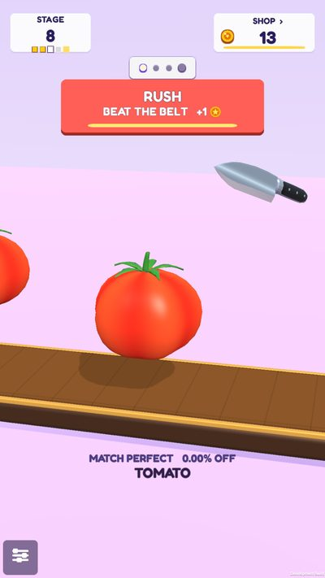
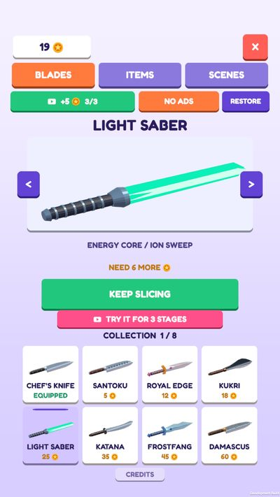
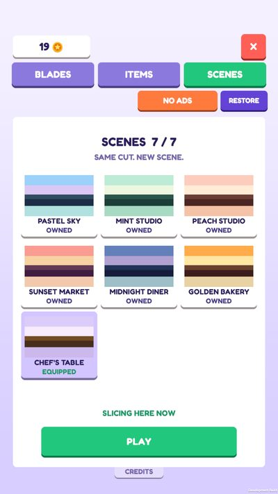

How a cut is judged
Measured by volume, not by eye.
The two pieces are weighed by their real 3D volume. A tomato cut through its middle reads 50.00% to 50.00%. Drift one point to either side and it is still PERFECT; five points is GREAT; past the limit, the stage restarts.
YOUR CUTCUT 1 / 4
50.00%50.00%
30%40%50%60%70%
PERFECT ±1%49.00 to 51.00
GREAT ±5%45.00 to 55.00
PASS ±20%Wider in the first stages
51 things to cut.
Six sets, from the garden to things that were never meant to be food. Each one stops somewhere new on the belt.
More than one cut.
Short stages, daily goals and things to unlock, without timers or energy.


